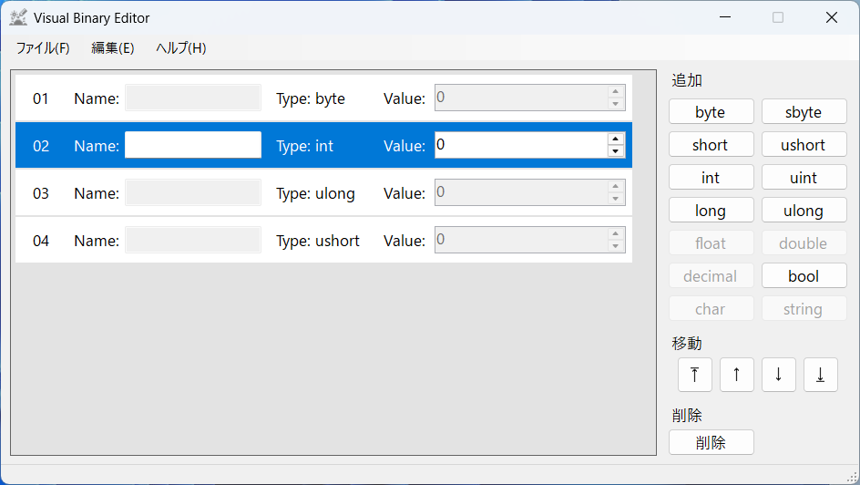

Visual Binary Editor
Visual Binary Editor
Visual Binary Editorへようこそ
Visual Binary Editorとは、System.IO.BinaryReader, System.IO.BinaryWriterによるバイナリファイルの読み込み、編集、生成を視覚的に行うことを目的としたソフトウェアです。
注意: このソフトウェアは、バイナリファイル改造による不正行為を助長するものではありません。 悪用目的で使用しないでください。
例えば、
byte save1;
int save2;
ulong save3;
ushort save4;
において
using (BinaryReader reader = new BinaryReader(fileStream))
{
save1 = reader.ReadByte();
save2 = reader.ReadInt32();
save3 = reader.ReadUInt64();
save4 = reader.ReadUInt16();
}
もしくは
using (BinaryWriter writer = new BinaryWriter(fileStream))
{
writer.Write(save1);
writer.Write(save2);
writer.Write(save3);
writer.Write(save4);
}
を実行したい場合、Visual Binary Editorでは以下のようになります。

詳しい使い方に関してはチュートリアルを参照してください。